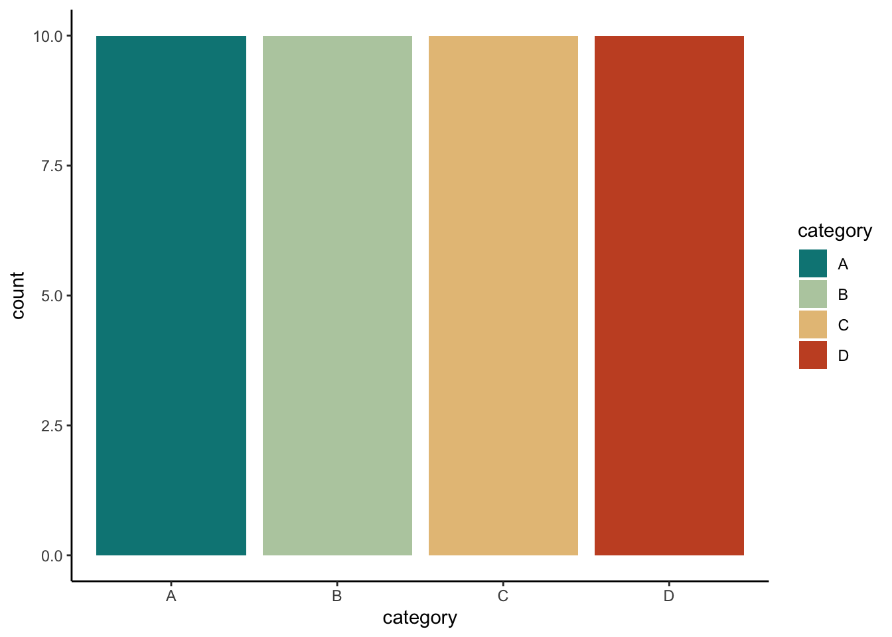
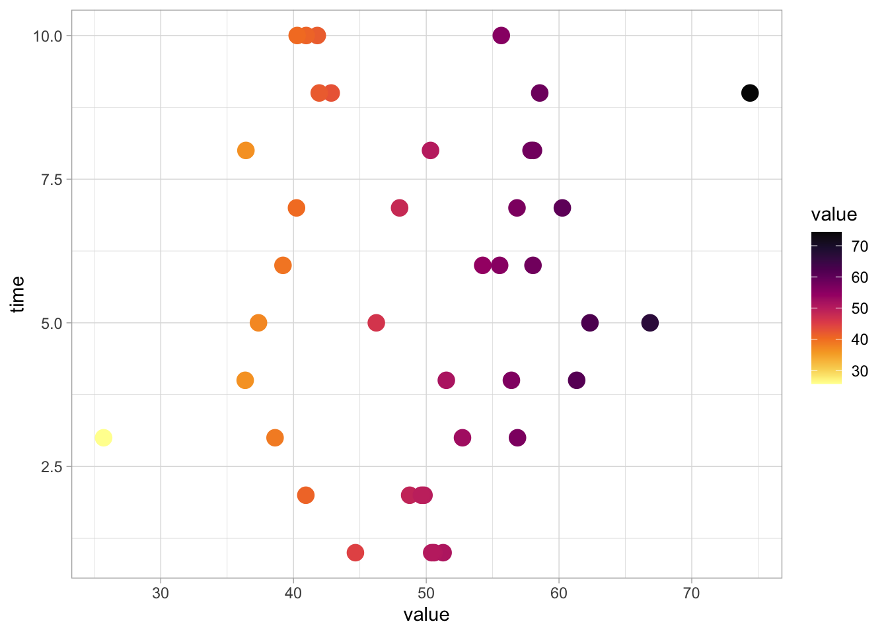
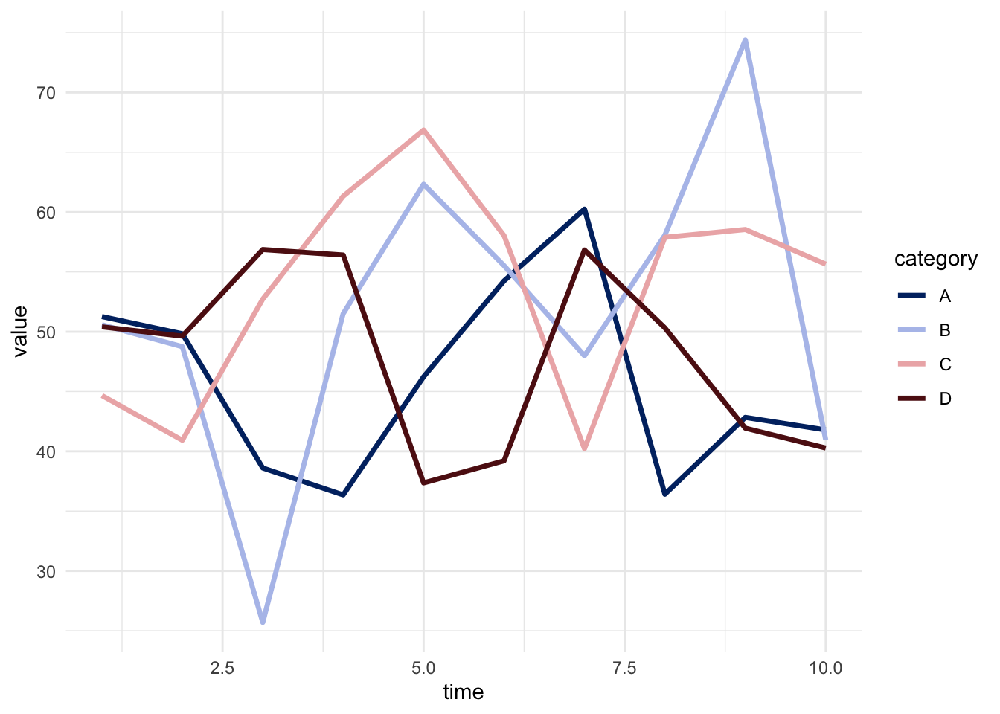
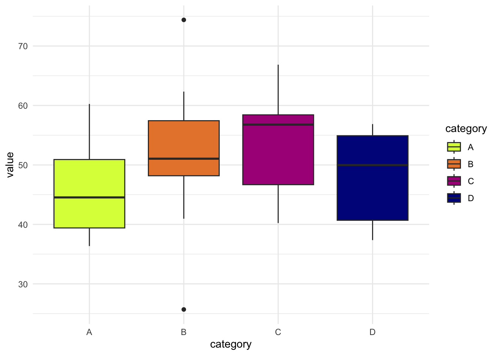
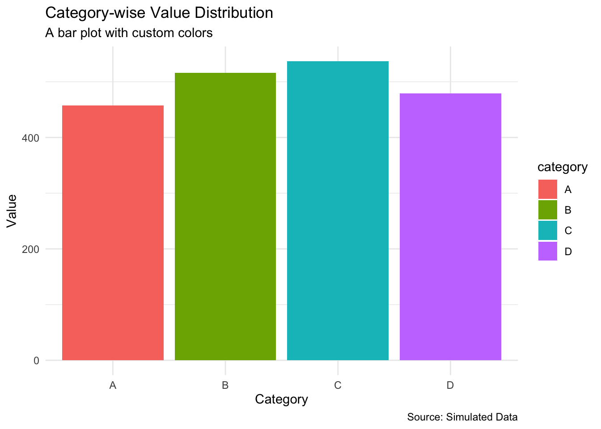
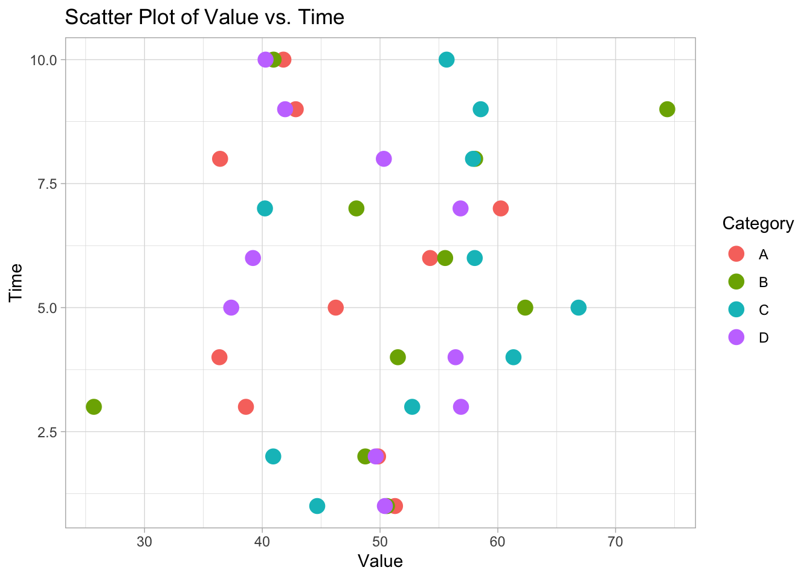
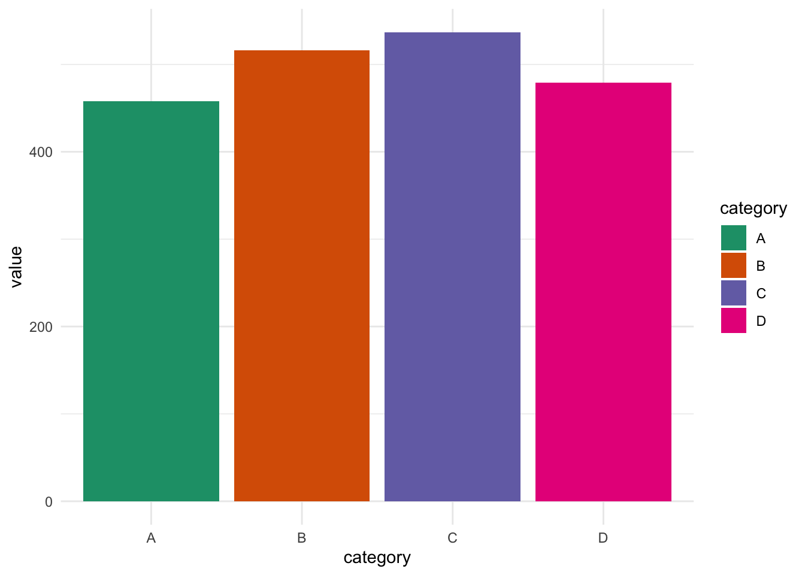

1️⃣ Grammar of Graphics: A structured approach to building visualizations using layer.
2️⃣ Aesthetic Mappings: Define how data variables are mapped to visual properties.
3️⃣ Geometries: Different plot types (bars, lines, points) to represent data effectively.
ggplot2 is a powerful and flexible package in R for data visualization. It is based on the grammar of graphics and provides a systematic way to create complex plots with minimal code. This crash course covers the basics of ggplot2, including color usage with the colorspace package. 🚀
If you’re new to data visualization in R, ggplot2 is the best place to start! With its intuitive syntax, it allows you to create stunning and customizable plots effortlessly. This tutorial is designed for first-time learners and will walk you through the fundamental concepts step by step. By the end, you’ll be comfortable creating a variety of plots with beautiful color palettes. 🎨📊
🔧 Installation and Setup
To get started, install ggplot2 and colorspace if you haven’t already:
install.packages("ggplot2")
The following package(s) will be installed:
- ggplot2 [3.5.1]
These packages will be installed into "~/Documents/Projects/25_post-doc_work/28_CI_Bioinformatics_club/00_Bioinformatics_club/renv/library/macos/R-4.4/x86_64-apple-darwin20".
# Installing packages --------------------------------------------------------
- Installing ggplot2 ... OK [linked from cache]
Successfully installed 1 package in 11 milliseconds.
install.packages("colorspace")
The following package(s) will be installed:
- colorspace [2.1-1]
These packages will be installed into "~/Documents/Projects/25_post-doc_work/28_CI_Bioinformatics_club/00_Bioinformatics_club/renv/library/macos/R-4.4/x86_64-apple-darwin20".
# Installing packages --------------------------------------------------------
- Installing colorspace ... OK [linked from cache]
Successfully installed 1 package in 6.7 milliseconds.
Then load the necessary packages:
library(ggplot2)library(colorspace)
📊 Creating a Sample Data Frame
We’ll create a simple dataset for visualization:
data <- tibble::tibble(category =rep(c("A", "B", "C", "D"), each =10),value =rnorm(40, mean =50, sd =10),time =rep(1:10, times =4))data
# A tibble: 40 × 3
category value time
<chr> <dbl> <int>
1 A 51.3 1
2 A 49.8 2
3 A 38.6 3
4 A 36.4 4
5 A 46.2 5
6 A 54.3 6
7 A 60.3 7
8 A 36.4 8
9 A 42.8 9
10 A 41.8 10
# ℹ 30 more rows
🏗️ Basic ggplot Structure
A basic ggplot consists of: ✅ ggplot(data, aes(x, y)) - Define the data and aesthetics ✅ A geom_*() function - Specify the plot type ✅ Additional customization layers
📉 Bar Plot 📦
ggplot(data, aes(x = category, fill = category)) +geom_bar() +scale_fill_discrete_divergingx() +theme_classic()

🎯 Scatter Plot 🔵
ggplot(data, aes(x = value, y = time, color = value)) +geom_point(size =4) +scale_color_continuous_sequential(palette ="Inferno") +theme_light()

📈 Line Plot 📌
ggplot(data, aes(x = time, y = value, group = category, color = category)) +geom_line(size =1.2) +scale_color_discrete_diverging(palette ="Blue-Red 3") +theme_minimal()
Warning: Using `size` aesthetic for lines was deprecated in ggplot2 3.4.0.
ℹ Please use `linewidth` instead.

📦 Box Plot 🎁
ggplot(data, aes(x = category, y = value, fill = category)) +geom_boxplot() +scale_fill_discrete_sequential(palette ="Plasma") +theme_minimal()

🏷️ Customizing Titles and Labels 🏷️
Adding titles, subtitles, captions, and axis labels enhances the clarity of your plots. 🎯
📝 Adding Titles & Labels
ggplot(data, aes(x = category, y = value, fill = category)) +geom_bar(stat ="identity") +labs(title ="Category-wise Value Distribution",subtitle ="A bar plot with custom colors",x ="Category",y ="Value",caption ="Source: Simulated Data") +theme_minimal()

🎨 Customizing Theme & Labels
ggplot(data, aes(x = value, y = time, color = category)) +geom_point(size =4) +labs(title ="Scatter Plot of Value vs. Time",x ="Value",y ="Time",color ="Category") +theme_light()

🎨 Customizing Colors 🎨
🎨 Using scale_fill_manual() 🎨
✅ Define custom colors for bars:
ggplot(data, aes(x = category, y = value, fill = category)) +geom_bar(stat ="identity") +scale_fill_manual(values =c("A"="#1b9e77", "B"="#d95f02", "C"="#7570b3", "D"="#e7298a")) +theme_minimal()

🎨 Using scale_color_manual() 🎨
✅ Define custom colors for points:
ggplot(data, aes(x = value, y = time, color = category)) +geom_point(size =4) +scale_color_manual(values =c("A"="#e41a1c", "B"="#377eb8", "C"="#4daf4a", "D"="#984ea3")) +theme_light()